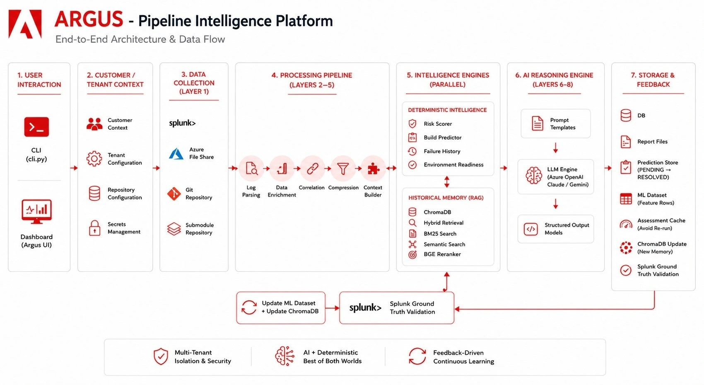
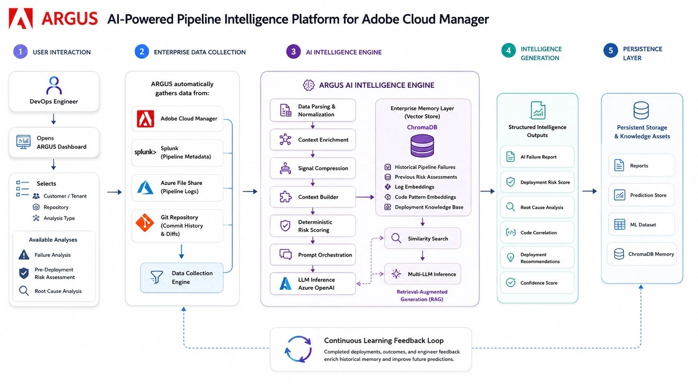

Risk arrives too late.
A pipeline validates a change after execution begins. It doesn’t necessarily flag a deployment likely to fail.
An intelligence layer over Adobe Cloud Manager, connecting deployment history, code changes, and AI reasoning, so engineers can move from scattered signals to evidence-backed decisions.
Inside the architecture ↓01 / CONTEXT & MOTIVATION
Release decisions need more than the latest pipeline status. Useful clues are often scattered across previous incidents, operational telemetry, code changes, and logs.
A pipeline validates a change after execution begins. It doesn’t necessarily flag a deployment likely to fail.
Lessons stay buried in tickets and logs, leaving engineers to rediscover the same failure patterns.
Compute is consumed, releases are delayed, and developer time shifts from building to manual investigation.
Bring the evidence to the decision, before a deployment, after a failure, and across the bigger picture.
02 / THE SOLUTION
Pre-deployment assessment brings together risk, confidence, vulnerable stages, risky files, similar failures, blast radius, and rollback complexity.
Predictive risk assessmentConnected logs, commits, and deployment metadata surface probable causes, relevant errors, affected files, and remediation steps.
Root cause analysisA 30-day view surfaces recurring failures, high-risk pipelines, failure-prone stages, and execution statistics.
Failure intelligence03 / SYSTEM ARCHITECTURE
CLI and dashboard entry points establish tenant and repository context. Processing, parallel intelligence engines, and AI reasoning turn the collected data into a structured report.
Collect execution history from Splunk, logs from Azure File Share, and commits and diffs from Git and Adobe Cloud Manager. Requests are scoped through tenant context and secrets management.
OUTPUT / raw logs, execution metadata, commits and diffsSelect a step to explore the pipeline. Step names are shortened for readability.

04 / INGESTION & PROCESSING
| Source | Signals collected | Why it matters |
|---|---|---|
| A Cloud Manager + Git | Repositories, commits, diffs, changed files, authors | Connect changes to failures and assess deployment risk. |
| >_ Splunk | Execution history, status, duration, failed steps | Operational trends and ground-truth labels. |
| △ Azure File Share | Build, deployment, and security test logs | Structured log analysis and probable root cause. |
Keep the error evidence, remove infrastructure noise, and compress long logs before model inference.
05 / PREDICTION & EXPLAINABILITY
The shipped system combines deterministic scoring with retrieval-augmented LLM reasoning. Supervised prediction is the next step, using labelled data collected through the feedback loop.
Risk scoring, build prediction, failure history, and environment readiness use rules and numerical features extracted from code, metadata, and past executions.
ChromaDB stores tenant-scoped deployment knowledge. Keyword and semantic search, refined with a BGE reranker, surface relevant incidents.
Predictions begin as PENDING. Actual outcomes from Splunk move them to RESOLVED. New reports feed back into ChromaDB and expand a tenant-specific labelled dataset for future predictions.
Deterministic feature rows and outcome labels form the training foundation for a planned XGBoost risk model.
For the supervised extension, SHAP would explain how individual features contribute to a prediction. The illustration below shows the concept, separate from the evidence-based reports in the shipped system.
Illustrative only. These bars are not ARGUS SHAP values, measured feature importances, or model results.
06 / FROM ANALYSIS TO ACTION
The report includes risk, confidence, a Go/No-Go recommendation, likely failure stage, risky code changes, blast radius, and rollback complexity.
This interactive example uses a HOLD state to show uncertainty. The thresholds are illustrative and do not represent Adobe’s production policy.
Uncertain territory. Investigate the signals before making a decision.
Example cutoffs: GO below 30%; HOLD from 30% to below 65%; NO-GO at 65% and above.
Parse logs and surface relevant error snippets.
Connect commits, affected files, and execution metadata.
Find similar incidents in tenant-scoped memory.
Return a probable cause and actionable remediation.

07 / TECHNOLOGY & IMPLEMENTATION
Engineer-facing entry points for tenant, repository, and analysis selection.
Source changes, pipeline telemetry, and outcome labels, with Azure File Share for logs.
Tenant-scoped vector memory of reports, logs, past failures, and code patterns.
Hybrid retrieval and reranking to ground model reasoning in relevant evidence.
Model options use prompt templates and structured output models.
Multi-tenant separation, secrets management, assessment reuse, and outcome reconciliation.
context = collect_and_validate(tenant, repository)
features = compute_deterministic_features(context)
evidence = retrieve_similar_incidents(tenant, context)
report = reason_with_evidence(features, evidence)
prediction_store.save(report, status="PENDING")
# Later, after the pipeline has completed:
outcome = splunk.actual_outcome(report.execution_id)
prediction_store.resolve(report.id, outcome)
training_rows.append(features, outcome)
vector_memory.add(report, outcome)08 / VALIDATION, RESULTS & IMPACT
96% prediction accuracy.
Investigation time fell from 30–45 minutes to 1–2 minutes. The bars use the upper endpoints, 45 and 2 minutes, for a common scale.
Integrated into Adobe’s internal tooling and used by engineers.
Match predictions to actual Splunk outcomes, resolving pending records into labelled examples.
Use output models and deterministic checks to validate AI responses.
Run deterministic scoring and AI reasoning in parallel, preserving a fallback if the LLM is unavailable.
09 / DEVELOPMENT JOURNEY
From the initial deployment problem to an integrated intelligence platform, with team guidance throughout.
Define the problem around release risk, repeated failures, lost developer time, and unused operational knowledge.
Unify tenant context, repository changes, execution metadata, and pipeline logs.
Combine deterministic features, compressed context, hybrid retrieval, and structured AI reasoning.
Persist reports, reconcile outcomes through Splunk, and connect the labelled dataset and vector memory.
Presented to leadership and integrated into internal Adobe tooling.
I independently designed and built ARGUS AI during my internship with Adobe’s AMS Enterprise team, with guidance from my manager, mentor, and team.
Manager: Shantanu Bagchi
Mentor: Anuj Gangwar
An end-to-end project connecting architecture, implementation, and product decisions.